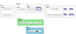
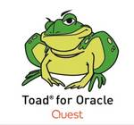
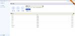
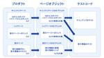

QA - freee Developers Hub
https://developers.freee.co.jp/archive/category/QA
フリー株式会社の開発者（エンジニア, デザイナー,プロダクトマネージャー, etc...）によるブログです
フィード
Webサービスの歩き方 - 境界値分析 -1.0 3
3
QA - freee Developers Hub
Webサービス開発におけるリスクを見つけるために、Webサービスの境界であるへりを探ります。
1日前

テストアーキテクチャの実践 52
QA - freee Developers Hub
こんにちは。決済プロダクトでQAエンジニアをしているrenです。freee QA Advent Calendar2024の23日目です。 今回は、決済プロダクト開発にテストアーキテクチャを設計した事例について紹介します。 テストアーキテクチャとは テストアーキテクチャによって解決したい課題 テストアーキテクチャ設計のステップ 1. この振る舞いを担保するためには、どのようなテストが必要だろうか？という問いを立てる 2. 抽象化して考えるための概念を学ぶ 3. テストアーキテクチャを描き、議論する テストアーキテクチャ設計のインパクト 実装改善に関する気づき テストの構造とソフトウェアの構造に関…
2日前

新卒QAのすゝめ
QA - freee Developers Hub
こんにちは。QAエンジニアをしているinachanです。 フリー以外のサービスと連携するプロダクトの一員としてQAをしています。 freee QA Advent Calendar2024 22日目です。 はじめに 私はfreee初の新卒QAエンジニアとして入社しました。QAの新卒として入ってきたのは私と12月10日のアドベントカレンダーを担当しているtonchanの2人です。 そして7月にフリー以外のサービスと連携するプロダクトにアサインされた新米QAです〜。 QAのことはもちろん、自分なりの発見をまとめていこうかなと思います。 なぜ最初のキャリアとしてQAを選んだのか そもそもQAエンジニア…
3日前

QAがスナップショットテストを書いてみた話
QA - freee Developers Hub
こんにちは、freee人事労務でQAエンジニアをしているkairiです。freee QA Advent Calendar2024 21日目です。 今回はプロジェクトの中で実際にあった、不足しているテスト（自動テスト）をQAが書いてサポートした事例、およびそこからシステムの内部構造に踏み込んだ改善提案をした事例を紹介します。 きっかけ 複雑な表示ロジックを持つUIのリファクタに関わることになった際に、パターンが多すぎて目でチェックすることが非効率に感じたことがあり、なんとか楽ができないかと考えました。 実際のデシジョンテーブル。ほんの小さなコンポーネントに対してこの複雑度。 しかし該当箇所には複…
4日前

権限管理基盤チームのCIの仕組みと課題
QA - freee Developers Hub
こんにちは。権限管理基盤チームでQAをしているyukkyです。 freee QA Advent Calendar2024 20日目です。 所属してるチームで運用しているCIの仕組みと課題について書こうと思います。 CI作成の背景 権限管理基盤チームでは、権限制御を担うマイクロサービスを開発しています。 このプロダクトはUIが少なく、APIテストを中心にしたテストを行っています。 機能追加のたびにテストシナリオを追加し、蓄積したテストシナリオは、リグレッションテストとして再利用しています。 以前の開発フローでは、PR単位でローカル環境にてリグレッションテストを実行していましたが、 シナリオ数の増…
5日前

テスト管理ツールを移行してみた 〜ツール転生させてQA無双〜
QA - freee Developers Hub
こんにちは。freee人事労務でQAエンジニアをしているnunです。 freee QA Advent Calendar 2024 19日目です。 昨年freee QA Advent Calender 2023にて下記テスト管理ツールの移行について投稿しました。 developers.freee.co.jp 本日はその後どうだったの？というところを投稿したいと思います。少し長いので必要に応じて後述の目次もご活用ください。 さて、タイトルでネタバレはしてしまっているのですが… お陰様でTestRailからZephyr Scaleへのテスト管理ツール移行は無事完了しました！！！ 結果として1年間がか…
6日前

社内QAメンバーにとったアンケートをまとめたよ 2
QA - freee Developers Hub
こんにちは。freee人事労務でQAエンジニアをしているしほです。 freee QA Advent Calendar 2024 18日目です。 なぜこのアンケートを実施しようと思ったのか QAの仕事は多岐にわたり、普段自身が業務をしている時に今すごく楽しいなと思うことが沢山あるのですが、他のQAの方をみていたり話していると人によって楽しいなと思う所が違ったりするのでは？と思い始めました。 QA業務の魅力についても人によって考え方が違いますし、アンケートをとってみました。 17名から回答を頂いたのでそれを発表したいと思います！ アンケートの概要 アンケート対象者フリーでQAエンジニアとして働くメ…
7日前

障害に立ち向かう！QAエンジニアの1年間のアクション 5
QA - freee Developers Hub
こんにちは。QAエンジニアをしているtoyopiです。 フリー以外のサービスと連携するプロダクトの一員としてQAをしています。 freee QA Advent Calendar2024 17日目です。 去年に引き続きアドベントカレンダーを執筆しております!! developers.freee.co.jp はじめに 約1年前、私は今の開発チームに配属されました。 悲しいことに、このチームは社内で1、2位を争うほど障害（※）が多いチームです…。 このチームが開発するプロダクトで起きる障害の中には、外部連携先に依存する原因もありなかなか一筋縄ではいかない現状です。 そうは言っても、ユーザーにとっては…
8日前

産休とってみた 2
QA - freee Developers Hub
こんにちは、freee会計でQAエンジニアをしている kana です。 freee QA Advent Calendar2024 16日目です。 私は2023年7月に産休に入り、2024年4月に職場復帰をしました。 今回の記事では、出産と育休中の生活と復帰後の働き方について書いてみようと思います。 生後2日目の手の写真 産休を取るまでのこと QAで初めての産休 社内では産休・育休を取るメンバーはいたものの、QAエンジニアで産休を取得する人は私が初めてでした。部署では前例がなかったので色々とジャーマネ※と手探りしながら進めたところもありましたが、社内では産育休に対するフォロー体制が整っており、安…
9日前

runnを用いたバックエンドテストの試行錯誤の変遷とこれから 44
QA - freee Developers Hub
こんにちは。2023年のQA Advent Calendarを見てfreeeのQAに興味を持ち、転職。そして本年のAdvent Calendarの内の1日を担当することになりました。決済プロダクトのQAエンジニアのsunnyです。 チームではアジャイルQAのスタイルを採用しており、要求・要件定義からユーザーストーリーを作成し、開発者とやりとりしながら仕様の理解を深めつつ、テスト分析・設計を行っています。 本記事はバックエンドQAで実践してきた、runnというツールを用いた変遷と、その先の展望についてのお話です。 この記事はfreee QA Advent Calendar 2024 - Adve…
10日前

From SQL Developer to QA Engineer: Shifting from Database Development to API Testing 4
QA - freee Developers Hub
Hello, mina-san! I'm Kim, a QA engineer from EMP Growth Team. Our team is tasked to prevent user’s churn due to incomplete functionality of freee-payroll and we generate cross-selling from freee-payroll to other products. This is the thirteenth day of the freee QA Advent Calendar 2024. Getting Start…
12日前

Why Accessibility Matters: A QA Engineer’s Journey to Inclusive Testing 7
QA - freee Developers Hub
Hi everyone! I'm Aireen, a QA engineer from the Employee Portal team. We're the ones behind the web application that connects administrators and employees seamlessly across all freee products. Can you believe it? We're already on the twelfth day of the freee QA Advent Calendar 2024—almost halfway th…
13日前

ページオブジェクトモデルを採用しているE2Eテスト基盤の実装Tips 24
QA - freee Developers Hub
こんにちは。SEQ (Software Engineering in Quality)のnakamuです。 freee QA Advent Calendar2024 11日目です。 これまで、freeeのE2EテストツールはSelenium+RSpec+Capybara+SitePrismをベースにした独自基盤を利用してきました。 この基盤は、2016年からページオブジェクトモデルを採用し、今日に至るまでE2Eテストの保守および運用を支えてきました。 今年度からは、Playwrightを基盤にした新しいE2Eテスト環境への移行を推進しており、新基盤でも引き続きページオブジェクトモデルを使用して…
14日前

新卒QA奮闘記：ひとりでQAプロセスを完走して見えたもの
QA - freee Developers Hub
こんにちは。決済プロダクトでQAエンジニアをしているtonchanです。 freee QA Advent Calendar 2024 - Adventarの10日目です。 はじめに 私はfreee初の新卒QAエンジニアの１人として入社しました。7月に決済プロダクトにアサインされ、2024/12/10 時点で5ヶ月目の新米QAです。 今回の記事ではfreee新卒QAの一部業務をお伝えできればと思います。 QAエンジニアの仕事とか実際何するんだろうと想像しづらい面もあると思いますので、就活中の方にもぜひ参考の１つにしていただけると幸いです。 なぜ最初のキャリアとしてQAを選んだのか 新卒でいきなり…
15日前
リグレッションテストを見直す
QA - freee Developers Hub
こんにちは。freee会計のQAエンジニアをしているbabaです。 freee QA Advent Calendar 2024 - Adventar 9日目です。 freeeでは、AppStoreとGooglePlay向けにモバイルネイティブアプリを展開しています。私は、その中でfreee会計アプリを含むいくつかのアプリを担当しています。 リグレッションテストの課題 モバイルアプリではリリース前に各ストアの審査が必要で、本番障害が起きた時に修正までのリードタイムがWebアプリより長くなってしまいます。そのためにバグを流出させたときのユーザ影響が大きくなりがちで、流出前にバグを検出するためのリグ…
16日前
ハッピーの重篤度でみんなで品質の目線合わせをするぞ！
QA - freee Developers Hub
こんにちは。freeeのQAで品質企画を担当しているymtyです。 freee QA Advent Calendar2024 8日目です。 今回のテーマである、ハッピー（不具合のこと）の重篤度でみんなの品質に対する目線合わせをしていることについては、2024年のfreee技術の日でも同様のタイトルでプレゼンを行いました。その時のスライドや動画も公開されています。 speakerdeck.com www.youtube.com このプレゼンの内容を元にしながらも、そもそも重篤度（Severity）ってどういうものか？ということと、freeeでは重篤度についてどんな取り組みをしてるのか？がわかるよ…
17日前
理想の働き方を実現するための、自分だけの快適なリモート・オフィス環境 〜freee QAエンジニア 2024年版〜
QA - freee Developers Hub
QAエンジニアの多様なリモート・オフィス環境を探る。個性あふれるデスクやモニタ、癒しアイテムが勢ぞろい！
19日前
チームで実例マッピングをやってみた
QA - freee Developers Hub
こんにちは freee会計のQAエンジニアをしているsugenoです。 freee QA Advent Calendar 2024 - Adventar 5日目です。 私が所属する開発チームで、実例マッピングを作ってチーム内での要件整理/検討を行ったのでその取り組み内容について書いていこうと思います。 そもそも実例マッピングとは、ストーリーをルールと例に構造化して要件を明確にする手法で 今回はV字モデルでいうと要求定義/要件定義/基本設計の部分を範囲として実施してます。 V字モデル 引用元：https://speakerdeck.com/nihonbuson/example-mapping?s…
20日前
仕様検討段階でのQAの関わり方やチームでの品質保証について
QA - freee Developers Hub
こんにちは。freeeでQAエンジニアをしているkenseiです。 freee QA Advent Calendar2024の4日目です。 QAとしてある程度経験を積むと「もっと上流から関わっていきたい」という意識が出てくるという話をよく聞きます。 そこで今回は「QAが上流から関わる」というのは具体的に何をしているのか、どういったメリットがあるのかについてや、チームでやっている取り組みについて書こうと思います。 はじめに まずはfreeeでは実装に入る前にどういった工程があるのか、私が所属している開発チームを例に見てみましょう。 成果物 詳細 オーナー Brief開発のきっかけとなる課題や背景…
21日前
アジャイルQAってなんだ？をみんなで考えた話
QA - freee Developers Hub
こんにちは。freee人事労務でQAエンジニアをしているsaeです。 freee QA Advent Calendar2024の3日目です。 私は長いことSIerとしてPM/ITSMの道を歩んできましたが3年前にQAエンジニア（以下、QA）にキャリアチェンジしています。そして2024年の9月にfreeeにQAとして転職してきました。 アジャイル開発にとびこんでQAという職種に出会った当初、色んなことの曖昧さに戸惑いました。スクラム開発では職能の明確な線引きはないし、QAに求められる技量も見渡す限りチームによって様々。自分のスキルでどうやって組織に貢献して行ったらいいんだろう...？ と悩みはじ…
22日前
グローバルQAエンジニアチームのマネージャーやってみた
QA - freee Developers Hub
こんにちは。フリー人事労務でQAエンジニアをしているyamaeriです。 freee QA Advent Calendar2024 2日目です。今日は私がグローバルQAエンジニアチームのマネージャーになってみた話をします。 自己紹介 私は2022年4月にフリーにQAエンジニアとして入社し、半年間はフリー会計のQAを担当していました。 QAは「Quality Assurance（品質保証）」の略で、QAエンジニアとはプロダクトを本当にリリースして大丈夫なのか、事前にプロダクトをテストする計画を立てたり、テストの実施をしたり、品質の改善に向けた活動をするエンジニアのことです。 入社して半年が経つ頃…
23日前
テストレシピをやってみた
QA - freee Developers Hub
こんにちは。QAエンジニアをしているharashinです。 freeeプロダクト共通で利用される従業員情報や取引先などのマスターデータを扱うプロダクトを担当しています。 freee QA Advent Calendar2024 1日目です。 adventar.org 去年に引き続き、QA Advent Calendar2024の発起人です。 今年も無事QAエンジニアだけでアドベントカレンダーを実施できることを大変うれしく思います。 去年のアドベントカレンダーを実施するにあたり、多くの方に圧をかけた結果、社内ではharashin とハラスメントがかけ合わさったハラシンメントという造語が作られまし…
24日前
Playwright の waitForLoadState('networkidle') のようなメソッドを Selenium で動かす
QA - freee Developers Hub
Chrome DevTools Protocol を使って、 Selenium でネットワークの待機を実現します。
9ヶ月前
QAマネージャーやってみての失敗談
QA - freee Developers Hub
こんにちは。freeeでQAのマネージャーをやってるでーにしです。 freee QA Advent Calendar2023 25日目です。QAマネージャーをしていて、あるあるアンチパターンを見事に踏んでいったので、振り返って良いお年を迎えたいと思います。 失敗①運用を考えずに自動テストを作ってしまう（2017年くらい） freeeではいくつか自動テストがありますが、一番運用が大変なのはE2Eテストになります。 E2Eテストについての詳細は、以下の記事をご参照ください。 developers.freee.co.jp その運用が大変なE2Eテストを運用を考えずに作ってしまいました。 当時の自分の…
1年前
マインドマップを使ったテスト分析を開発チームとQAチームでやってみた
QA - freee Developers Hub
こんにちは freee会計のQAエンジニアをしているsugenoです。 freee QA Advent Calendar 2023 24日目です。 私は2023年4月にfreeeにQAエンジニアとして入社しました。 今回は、会計チームでマインドマップを用いたテスト分析を始めてみたので実際やってみてどうだったかを記事にしたいと思います。 マインドマップを始めた経緯 QA業務をやっていく中で、私は会計のドメイン知識も浅くQA業務をするにあたり不安感を抱えており、開発チームの方にどのようにキャッチアップしてるかを相談したところ、コードを見つつ、各々が仕様をキャッチアップしてるとのことでした。 そのた…
1年前
Webサービスの歩き方 - シン・境界値分析
QA - freee Developers Hub
京王線 16:27 各停 調布 32768両編成 こんにちは。freeeでQAのマネージャをやってるuemuです。freee人事労務とグローバル開発のQAをメインで担当しています。 これは、freee QA Advent Calendar2023 23日目の記事になります。 はじめに みなさん、境界値分析はやってますか？ 普段、QA業務を行っている人だったら、やったことがない人はいないでしょう。「そんなの知ってるよ」「いつもやってるよ」という人がほとんどだと思いますが、今回は普段より少し広い視野で境界値分析をやってみたいと思います。 ちょっと話が脱線しますが、私はブラタモリという番組をよく観ま…
1年前
リグレッションテストで使うテストの設計にGIHOZ使ってみた
QA - freee Developers Hub
こんにちは、freeeのQAでマネージャーをしてるymtyです。 freee QA Advent Calendar2023 22日目です。 私は、QAマネージャーとしていくつかのプロダクトのQAに関わっています。今日はその中のひとつで、freee会計の申請機能（経費精算、各種申請、支払依頼、購買申請）を担当しているQAのメンバーであるMさんとリグレッションテストで使うテストの設計をした話を書きます。 テスト設計の細かい内容は読み飛ばしたい方は最後のほうにある（ここ大事）テスト設計の裏話って部分だけ読んでもらえればいいと思います！ きっかけ 最初にやったこと ワークフローのステータス遷移のテスト…
1年前
権限管理基盤マイクロサービスで行っているQA活動について
QA - freee Developers Hub
こんにちは。権限管理基盤マイクロサービスを開発するチームでQAエンジニアをしているyukkyです。 freee QA Advent Calendar2023 21日目です。 今日は権限管理基盤マイクロサービスを開発するチームで行っているQA活動について記載します。 権限管理基盤マイクロサービスとは freeeプロダクトの開発チームが権限管理基盤マイクロサービスを導入することで、きめ細やかで多様なアクセス制御を可能にし、以下の実現を目指しています。 freeeプロダクトのユーザーにとって、簡単かつ安全に安心して権限運用ができる freeeの開発者にとって、権限制御機能を手軽に安全に導入・運用でき…
1年前
QAとしてチームとのコミュニケーションで心がけていること
QA - freee Developers Hub
こんにちは。freee会計の口座連携システムでQAエンジニアをやっているtoyopiです。 freee Developers Advent Calendar2023 20日目です。 自己紹介 私は2022年10月にfreeeにQAエンジニアとして入社しました。 freee入社前は組み込み開発/技術営業/Webアプリケーション開発などを経験しており、QAエンジニアはfreeeで初めて経験する職種でした。 社会人経験の中では開発として過ごしてくる期間の方が長かったのですが、 モノやプロダクトの開発をしていると「自分が今作っているものは実際に使う人にちゃんと意味のあるものになっているのだろうか」と思…
1年前